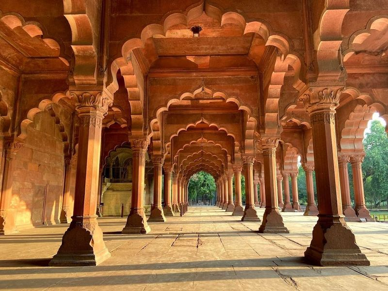
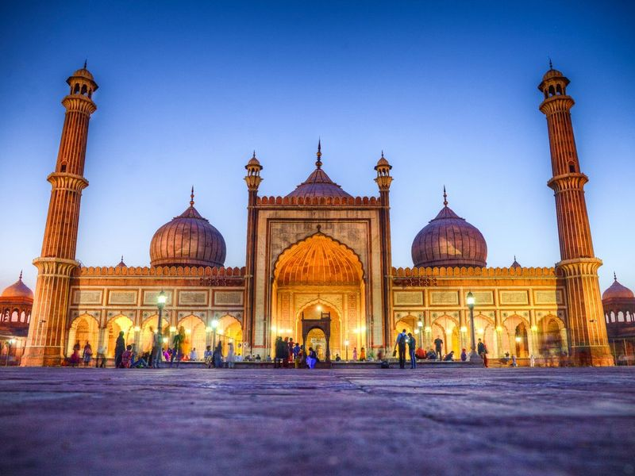
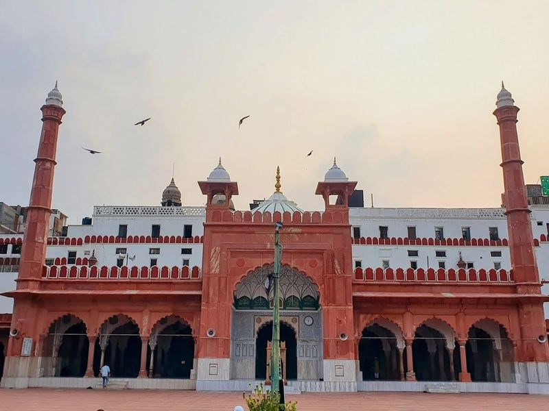
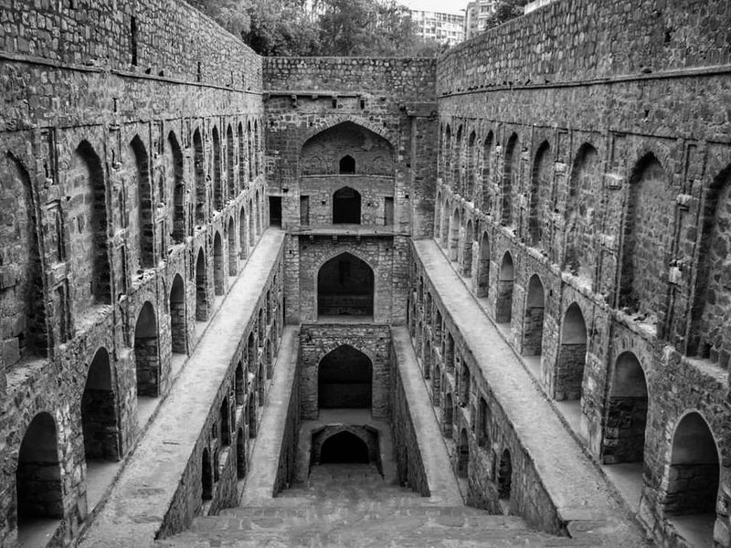
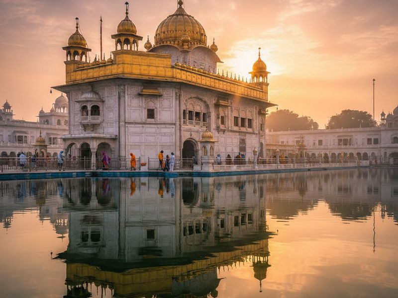
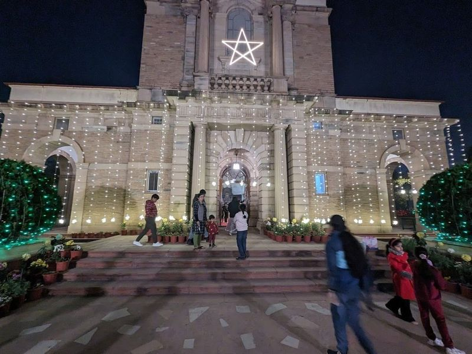
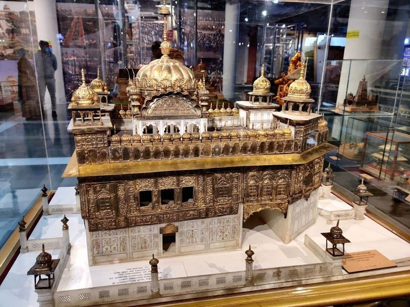
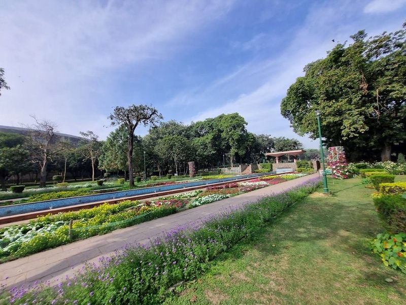
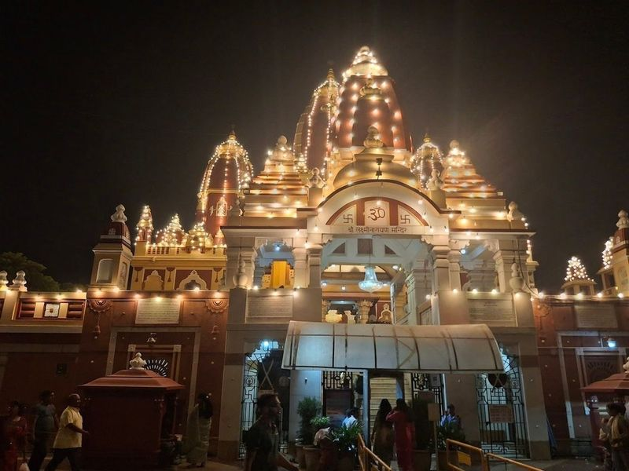
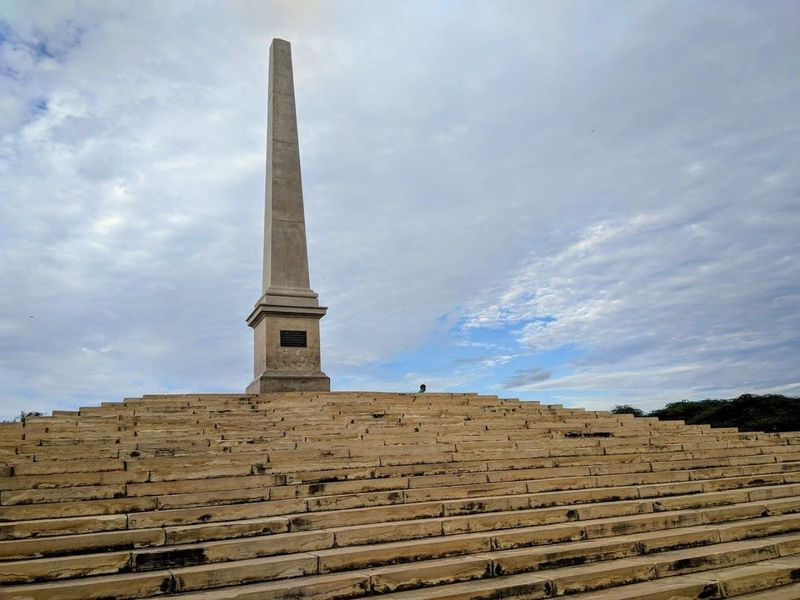

Explore Delhi
A Brief History
Delhi layers Rajput, Sultanate, Mughal, and British imperial capitals on the Yamuna River. Red Fort, Humayun's Tomb, and Qutub Minar record successive conquests and architectural patronage, while New Delhi's ceremonial axis reflects twentieth-century colonial planning and independent India's government seat. Lotus Temple and Lodi Garden tombs extend Mughal and colonial layers across the capital's metropolitan sprawl.
Attractions Map
Top Sights & Activities

Red Fort
The Red Fort, located in Old Delhi, India, is a 17th-century Mughal fortress made of red sandstone. It was the main residence of the Mughal Emperors and was commissioned by Emperor Shah Jahan in 1638. The fort's design is credited to Ustad Ahmad Lahori, who also built the Taj Mahal.

Jama Masjid
Jama Masjid, a magnificent 17th-century Mughal-style mosque located in India, is a example of Mughal architecture. Built by Emperor Shah Jahan, it features red sandstone and marble structures with impressive minarets reaching 40 meters high. The mosque's vast courtyards can accommodate up to 25,000 worshippers and offer picturesque views for visitors.

Fatehpuri Masjid
Fatehpuri Masjid, constructed in 1650 for Fatehpuri Begum, one of Shah Jahan's wives, is a red sandstone mosque In Old Delhi. This historical site showcases Mughal architecture and holds significance as a symbol of the city's rich cultural and religious heritage.

Agrasen ki Baoli
Ugrasen ki Baoli is a 10th-century stepwell adorned with intricate stone work, featuring towering arched walls and alcoves. This historical site spans 60 meters in length and 15 meters in width. Believed to have been built by Maharaja Agrasen and reconstructed in the 14th century, this ancient water reservoir is safeguarded by the Archeological Survey of India.

Gurdwara Bangla Sahib
Gurudwara Sri Bangla Sahib, located near Connaught Place in New Delhi, is a significant Sikh place of worship. The complex features a pool known as the Sarovar, reminiscent of the one at Amritsar's Harminder Sahib. The water in this lake is considered sacred and has purported healing properties.

Cathedral Church of The Redemption (C.N.I.)
Nestled in the heart of Delhi, the Cathedral Church of The Redemption, also affectionately known as Viceroy Church, is a example of 1930s British colonial architecture. Its design draws inspiration from renowned architects Lutyens and Palladio, showcasing an elegant blend of red sandstone exteriors that reflect simplicity and class.
Rashtrapati Bhavan
Rashtrapati Bhavan, the official residence of the President of India, is a must-visit for every Indian. The grand estate includes elegant Mughal gardens and a newly inaugurated museum showcasing its rich history. Built between 1912 and 1929, this 340-room building served as the British Viceroys House before India gained independence. Its architecture reflects a blend of Indo-Saracenic, Mauryan, Mughal, and regional styles.

Rashtrapati Bhavan Museum New Delhi
Nestled within the grand premises of Rashtrapati Bhavan, the Rashtrapati Bhavan Museum is a treasure trove for art and history enthusiasts. Inaugurated in 2014 by President Pranab Mukherjee, this remarkable museum showcases an impressive collection of memorabilia from various presidencies, including unique gifts received by Indian presidents over the years. The museum's layout features three distinct sections: The Clock Tower, The Stables, and The Garage.

Talkatora Garden
Nestled on Willingdon Crescent Road in New Delhi, Talkatora Garden is a formal garden that beautifully showcases Mughal-era ruins. With its paved pathways and long water features bordered by flower beds, this serene oasis comes alive during spring when blossoms paint the landscape with fresh colors. Ideal for picnics, relaxation, and sunbathing, Talkatora Garden also boasts a popular swimming pool—perfect for cooling off on warm days.

Shri Laxmi Narayan Temple (Birla Mandir)
Shri Laxmi Narayan Temple, also known as Birla Mandir, is a sprawling Hindu temple complex spanning over 3 hectares. Situated near Connaught Place in New Delhi, it was constructed by the renowned Birla family and inaugurated by Mahatma Gandhi in 1939. The temple is dedicated to Goddess Laxmi and Lord Vishnu, collectively known as Laxminarayan.

Coronation Park
Nestled in the northern part of Delhi, Coronation Park is a serene historical site that echoes the grandeur of India's colonial past. Established to commemorate the centenary of the 1911 Delhi Durbar, this park was once a hub for royal celebrations where Indian dignitaries gathered under British rule.